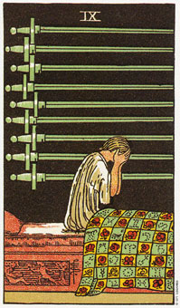

宝剑九暗示由梦境传达的直觉，或对问题的担心。
宝剑九的牌描绘的是一个人坐在床上，宛如刚从恶梦中惊醒。这九把剑是水平放置的，而第九把剑则位于此人心脏的部位，把思想与感情或忧虑与感情连结在一起。床罩上饰以红色玫瑰和黄道十二宫图，在行星的运行及时间的流逝过程中，，象征我们每个人都会经历到的生命周期。
在《塔罗牌图解》(The Pictorial Key To The Torot)一书中，亚瑟*位特是以“监禁、猜疑、困惑、合理的恐惧和羞愧”来解说这张牌。它可能会拥有上述的每一种意义，这段赖它周遭出现了那些牌而定。
九一张代表担心和情绪骚动的牌。这种担心可能是对自己或周遭的一切。就业可以代表鲜明的梦境或梦魇，而梦魇则可能是在传达一种强烈的讯息，即你生命当中某些不对劲的事物，已由潜意识而浮现在你的意识层面了。当你醒过来，你可能会发现你对梦境有着清晰的印象，或者你会觉得很疲累。这种疲累感可能是那鲜明的梦境干扰了你的睡眠品质所造成的。假设你将你的梦境写成日志，或许会发现一个共同的线索或是明显的讯息。那么你的梦便可以变成一项接近你潜意识的有效工具了。
九张牌可以暗示，你的身体的能量有太多是位于头部了。或许你的焦点和注意力都集中于思考，而没有意识到情绪或身体的部分。在这种情况下，你需要脚踏实地。这其实就是藉着接触大地的行动，来重新认识你自己，譬如散步、运动或多花时间亲近大自然。体能的活动通常有助于重新分配能量至全身当中。
大体上的意义
宝剑九代表的是强烈的梦。或许你的潜意识正努力教导你某些事情。倾听你的梦境。或许你是在支持某种状况或哲理，而它并不相对的支持你。
忧烦、头痛和睡眠的困难也同样是这牌所意指的。在健康的分析方面，就是有关心脏、上级追、颈部和头部方面的问题。
假如九这张牌是和五角星牌一起出现的话，那么你可能会有金钱方面的困扰;而如果它是出现在圣杯牌的旁边，你可能是在为两性关系或情感上的事情而烦心;假设它和权杖牌在一起的话，那么有两种可能，即你正在为旅行或改变的事烦恼，或是你由太多身体上的事情需要你马上去关心它。
两性关系上的意义
在两性关系的分析中，宝剑九暗示你正为一个两性关系烦恼，或是你有很鲜明的梦境告诉你，在某段关系中基本问题是什么。
九这张牌也可以象征，你恐惧一段关系的破裂，而这种恐惧可能是毫无由来的。你必须连同牌面上其他的牌一起看，才能证实这方面的意义。这正是倾听你自己心声的时候了，如此你才能确认既满足你所有的需求。
倒立的宝剑九
宝剑九出现倒立时，它意指梦境所带来的直觉。你很可能会依梦境所透露的讯息来行事。这张牌以暗示预言式的梦境，详述着你未来生活当中的重要事件。
简单的说，九这张牌说的是你的潜意识将你的恐惧和欲望，透过梦境传达给你的意识。当九出现倒立时，你要更加留意这样的讯息，因为该是你不再隐藏你自己、真实的价值、恐惧，或未实现之欲望的时候了。一旦你能面对你的恐惧，噩梦将沉湎下来。它也可能意味着，对某种特殊状况你已经不再那么担心了。